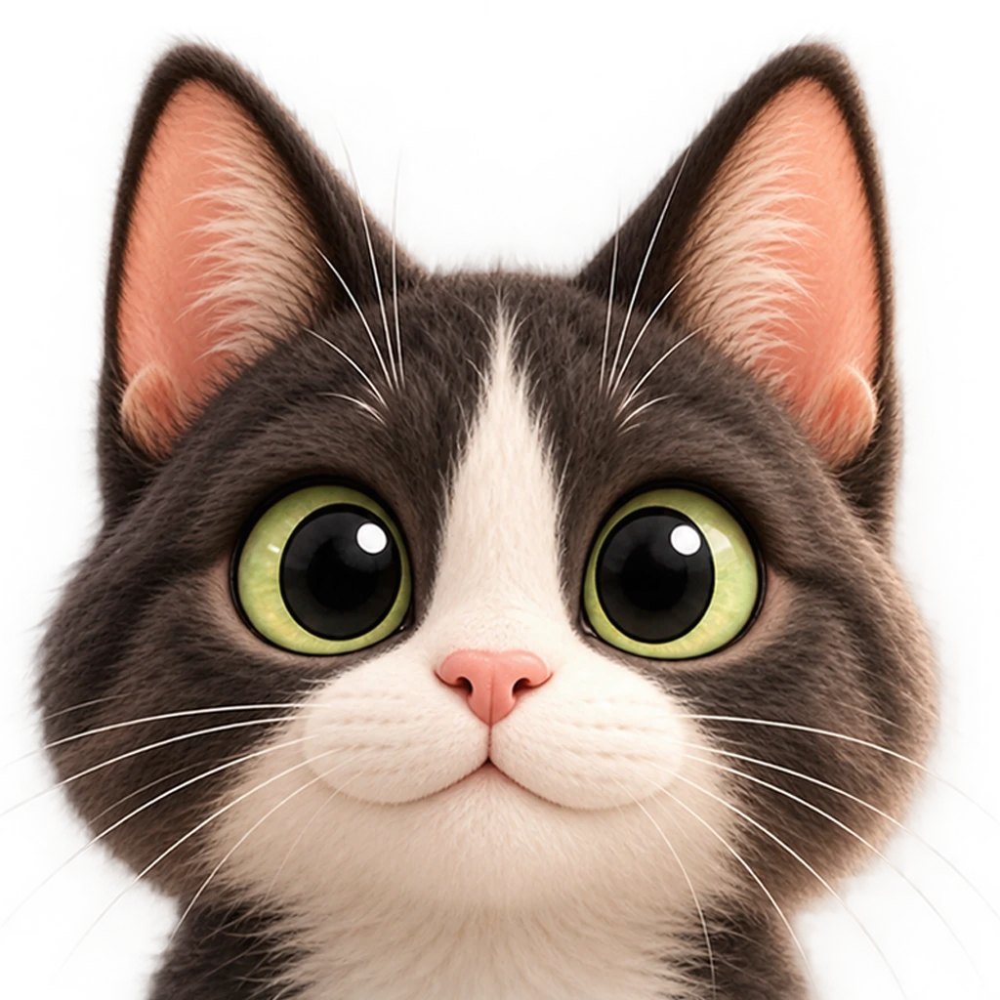

{{plantName}}
{{sciName}}{{sciCv}}
Safety information depends on the exact plant

Checking for {{petName}} · CatChecking sources for {{plantName}}…
We couldn't load information for {{plantName}}. This is a connection problem, not a result about the plant.